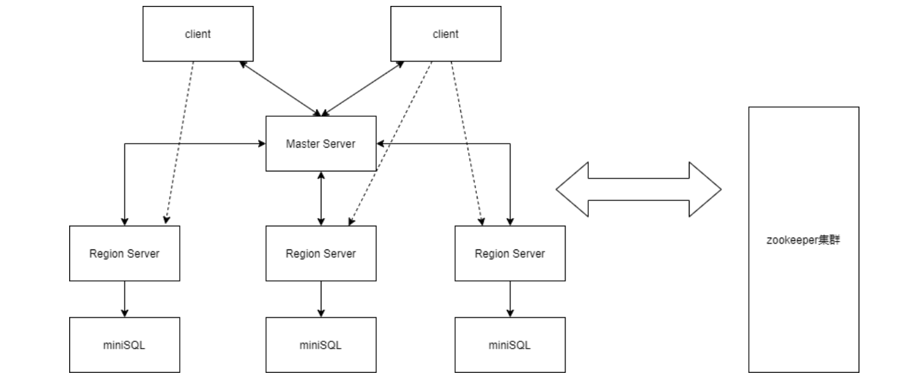
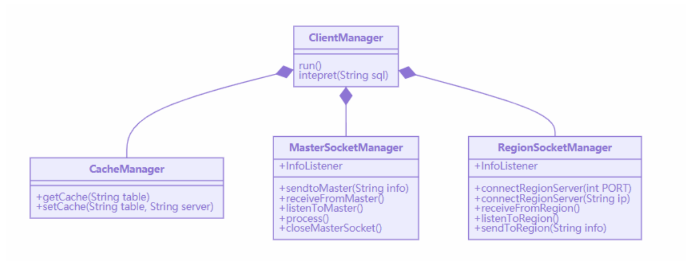
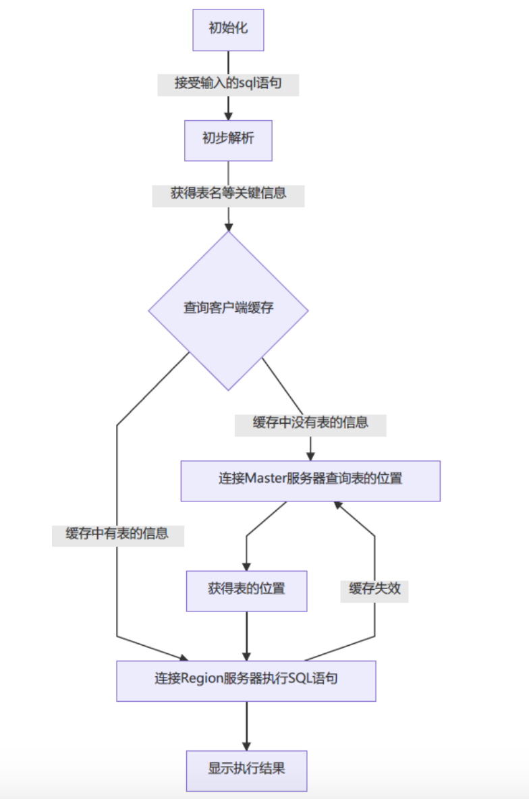
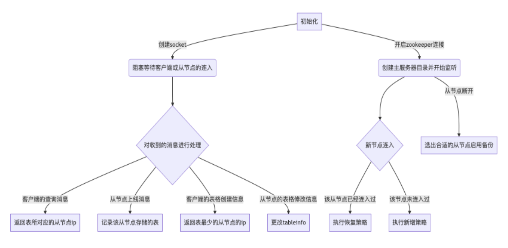
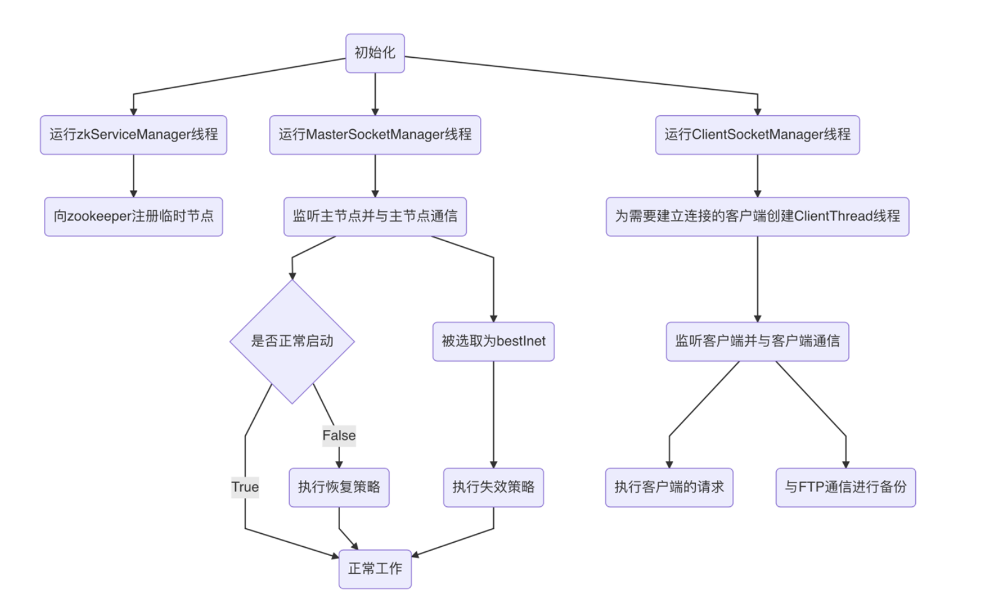
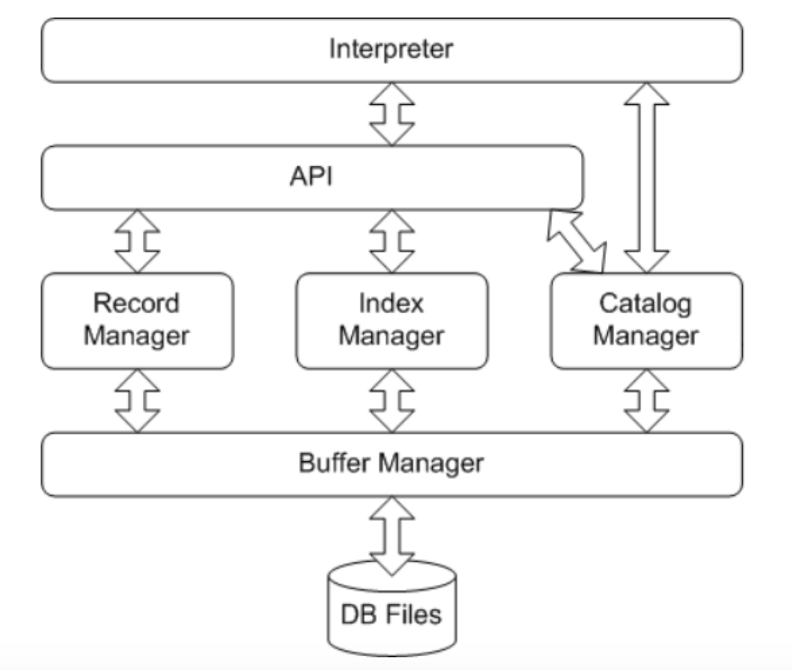
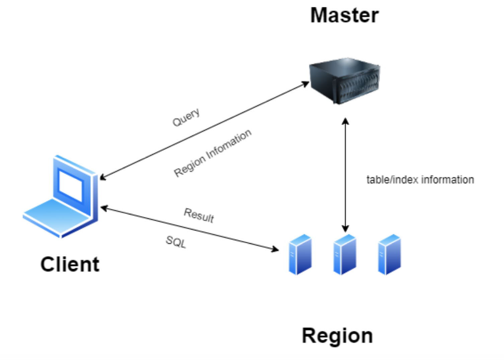

随意的学习总结1：记一个Naive分布式数据库的实现
记录上学期一个做了比较长时间的课程Project——分布式关系型数据库引擎的实现方式和细节。
记一个Naive分布式数据库的实现
前言
上个学期上了一门必修课《大规模信息系统构建技术导论》，据说是用来对标MIT6.824而开设的一门分布式系统课程，然而上课内容一言难尽，感觉听的人也不是很多，唯一有价值的是这门课的project——实现一个分布式数据库引擎，但是对于具体怎么实现，这门课程也没有给出很多提示，唯一提供的资料就是几页写了作业要求的PPT
因此我们不得不从头开始闭门造车，虽然也看到过GitHub上很多开源的分布式数据库，但是这些项目规模过于庞大，完全不是一个课程project所能容纳的，并且老师说要在大二课程《数据库系统》的miniSQL上继承发展，做出一个分布式的miniSQL，因此很多开源的KV数据库的参考价值也就降低了(miniSQL是一个关系型数据库)
所以最终小组三个人缝出了一个四不像的分布式关系型数据库引擎Distributed-miniSQL，下面重点介绍一下整个项目实现的过程和细节。
技术选型
老师点名要用zookeeper进行集群管理，因此采用了Java来开发，同时使用Zookeeper作为集群管理，使用FTP服务器作为副本管理。
系统架构
总体架构

系统的源代码中将整个 maven 项目划分成三个模块，分别是 Client，Master Server 和 Region Server，分别对应分布式 MiniSQL 系统的客户端、主节点和从节点， 并且三者之间都可以在一定的通信框架下进行通信，同时主节点和从节点通过 Zookeeper 集群，对数据表的信息进行统一的管理。
Client设计

Client 由一个 ClientManager 类负责管理，该类下面还有三个子功能的类，分别 是：
- CacheManager，负责客户端的缓存服务，使用一个 HashMap 来对缓存进行管 理，每次开启客户端就会创建而退出客户端就会清除，使用 key-value 的方 式存储了一些表名-从节点 IP 地址的对，并提供了增删查改的接口
- MasterSocketManager 负责和主服务器进行通信，通过建立 Socket 连接实现 异步的 IO 流，在一个单独的线程中运行，包括查询数据表所在的 Region 等功能
- RegionSocketManager 负责和 Region Server 进行通信，Client 在获得了某个 表对应的 Region 的 IP 地址之后会和这个 Region 建立 Socket 连接，并且监听端口位于一个单独的线程中，可以执行 SQL 语句的发送和接收 SQL 语句 执行结果等功能
整体工作流程可以用下图来表示：

Master Server设计
MasterServer由一个MasterManager类负责管理，该类下面还有三个子功能的类， 分别是：
- TableManager，负责管理维护存储在主节点的各种重要信息。如 Map tableInfo 用于记录表与其所在从节点 ip 的对应关系；List serverList 用于记录所有连接过的从节点 ip，方便判断新连接的从节点是全 新的还是失效后恢复的；Map> aliveServer 用于记录当前 活跃的从节点 ip，以及每个从节点 ip 对应的所有表。依托于这些信息，我们 才可以实现容错容灾、副本管理等功能。
- ZookeeperManager负责使用zookeeper进行集群管理。当每个从节点连入时， 首先需要在 zookeeper 的 db 目录下完成自己的注册，编号是 Region_0、 Region_1 等依次递增。通过 zookeeper 进行集群管理，我们可以确保当节点 有变化时，能够监听到，并做出相应的处理，如容错容灾服务等。
- SocketManager 负责和 Client 以及 Region Server 进行通信。Client 在没有缓 存时，需要先访问主节点从而获得某个表对应的 Region 的 IP 地址，从而在 之后和这个 Region 建立 Socket 连接。Region Server 在增加删除表时，需要 通过 Socket 连接给 Master Server 发消息。同时，Master Server 在检测到有从 节点挂了之后，需要在负载均衡后选出合适的从节点，给从节点发消息以通 知它完成容错容灾。
整体的工作流程如下图所示：

Region Server设计
从服务器由一个 RegionManager 负责管理，该类下包含四个子功能的类， 分别是：
- zkServiceManager 负责向 zookeeper 注册当前从节点的临时节点。
- DataBaseManager 负责向主节点发送表的信息，并作为句柄被包含在 Master SocketManager 中。
- ClientSocketManager 负责为需要建立连接的客户端创建 ClientThread 线程， 并利用该线程，监听客户端并与客户端保持通信。一方面，从节点需要执 行客户端的数据库请求语句；另一方面，从节点需要在数据发生修改后， 把修改后的数据文件上传到 FTP 进行备份。这里需要使用到 FTPUtils 类， 该类中包含了一系列与 FTP 通信的函数，包括上传、下载以及删除等功 能。
- MasterSocketManager 负责监听主节点，并与主节点保持通信。主节点传给 从节点的信息主要有两类：以[3]开头的信息是主节点在其他从节 点宕机后，要求当前从节点获取该宕机从节点的备份，也就是执行失效策 略；以[4]开头的信息是主节点检测到宕机后的从节点重新上线 后，要求其执行恢复策略。

miniSQL设计
miniSQL作为一个独立的模块运行在Region中，它采用了跟数据库系统课程中一样的架构设计：

技术细节
Socket通信框架
本系统实现了 Client，Master 和 Region 之间的两两通信，通过 Socket 连接建 立稳定可靠的通信与异步的 IO 流，同时制定了一系列通信协议，用于确保通信 的可靠性和准确性，系统的总体通信架构如下图所示：

- 事实上也可以用RPC进行远程调用，但是这里我们实现了更底层的一套Socket通信框架，虽然比较简陋，但是至少能跑
- 这套Socket通信框架允许客户端跟多个Region相连，也允许Master跟多个Region相连
客户端缓存
中我们实现了客户端缓存，可以大大降低查询所需的时间，提高 IO 的 效率，缓存通过一个 HashMap 实现，并且会定期更新和清除缓存的内容，客户 端在向服务器发送 SQL 语句之前先对输入的 SQL 语句进行一个简单的解析，提 取出要处理的表名或者索引名，然后在缓存中先进行查询，如果查到了对应的 Region 地址就直接和 Region 进行连接，如果没有查到就和 Master 先连接并获取 Region 的地址之后再和 Region 连接。
因此本系统实现了所谓的分布式查询，即客户端执行 SQL 语句时，并不是所 有时候都依赖 Master 提供的元信息，而是使用一套分布式的缓存功能（缓存分 布在各个客户端上），有的时候客户端可以直接实现和 Region 的连接以及通信， 并不完全依赖主服务器，因此也具有一定的容错容灾能力（当然主要的容错容灾 能力并不依赖于缓存）
集群管理
本系统作为一个分布式数据库，必须要对数据分布进行合理的设计。在本系 统中，为简化处理，一个表就是一个 Region。每个从节点管理着若干个 Region， 也就是管理着若干张表。主节点则记录了每个从节点和自己管理的表的对应关系。 当客户端需要对某张表进行操作时，则访问主节点获取表所对应的从节点并进行 访问；当有从节点挂掉，主节点执行容错容灾策略时，同时也要更新自己所存储 的表的对应关系。这部分具体的内容在容错容灾中详细阐明。
集群管理，则利用 zookeeper 进行。当每个从节点连入时，首先需要在 zookeeper 的 db 目录下完成自己的注册，编号是 Region_0、Region_1 等依次递 增。通过 zookeeper 进行集群管理，我们可以确保当节点增加、失效、恢复时， 能够监听到，并做出相应的处理。
负载均衡
本系统中我们实现了负载均衡。当我们要新创建一张表时，主节点永远会选 择表最少的从节点进行创建。当我们要执行容错容灾时，永远是把挂掉从节点的 表的备份转移到表最少的从节点上。
在进一步的设计中，我们还想解决热点问题。主节点每隔一段时间，都会给 自己管理的所有从节点发消息，让他们返回自己从收到消息到下一次收到消息的 这段时间内，所收到的访问次数以及每张表的访问次数。主节点收到从节点的所 有消息后，对消息进行处理，如有热点问题出现，即一个 RegionServer 中有两张 表都访问非常频繁时，把这张表删除，转移到另一个访问相对不频繁的从节点上。
副本管理和容错容灾
本系统通过 FTP 备份实现了副本管理功能，每当从节点检测到客户端发送 的命令对数据库的数据进行了修改，就把修改后的数据在 FTP 上进行更新。这 里还有一种策略，是另启一个线程，每过固定的一段时间就把从节点保存的数据 在 FTP 上进行更新。不过我们经过讨论，为了方便测试，还是使用了当前这种策略。
容错容灾是在副本管理功能基础上完成的。一方面，主节点通过 zookeeper 监测到有从节点宕机，立刻从正常工作的从节点中选出最优的从节点，也就是存 放表数量最少的从节点，并向该最优从节点发送信息[3]ip#file，让该最 优从节点执行失效策略，也就是把信息中包含的表全部通过 FTP 下载到本地， 并将宕机从节点的 table_catalog 和 index_catalog 追加到本地的 table_catalog 和 index_catalog 之后。另一方面，当宕机的从节点重启后，主节点监测到该事件， 向其发送[4]recover，要求该从节点执行恢复策略，即把之前的表和索引 数据全部清空，完成之后向主节点发送[4]online，即完成容错容灾流程。
总结
虽然整体的设计和实现很简单，但是真的把这么一个分布式miniSQL写完之后感觉还是比较有成就感的，感觉里面用的都是一些分布式系统共通的设计原则，比如缓存，socket通信框架和通信协议以及主从管理的模式，算是本科期间做的比较用心的